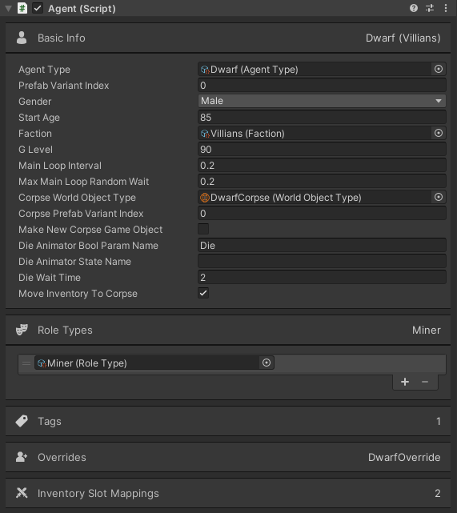

Components
ScriptableObjects
Plain C# Classes
Agent : Entity : MonoBehaviour
What is an Agent?
An Agent is a component that must be attached to any Game Object that can make decisions and act in the World.
An Agent's main field is it's Agent Type, which defines the configuration for the Agent.
See Agent Guide.
Agent Custom Inspector

Basic Info
| Agent Type |
All Agent's must have an Agent Type.
See Agent Type Inspector. |
| Entity Types can have multiple Prefab Variants. This index specifies which Prefab Variant represents this Agent. Indexing starts at 0. | |
| Gender | Male, Female, or Unknown. |
| Start Age | When game starts how old is the Agent? |
| Faction | Does this Agent belong to a Faction? (A group) See Faction Inspector. |
| G Level |
Similar to R Level for Agent to Agent relation level, 0-100 with 0 being hate, but
for the Faction. 0 G Level would mean the Agent has little loyalty to the Faction.
G Level is not currently used by TAI Should be renamed to F Level |
| Main Loop Interval | Waits this many seconds between Main Loop runs. |
| Max Main Loop Random Wait |
Waits 0-this (uniform random) many seconds between Main Loop runs. This value is added
to the Main Loop Interval and a new random number is generated every loop. See Agent's Main Loop. |
| Corpse World Object Type | If the Agent can die and has a corpse it needs to be a World Object Type. |
| Corpse Prefab Variant Index | The Prefab Variant Index for this Agent's corpse. |
| Make New Corpse Game Object | Should the Agent Game Object be destroyed and a new World Object Game Object be Created? If not TAI will disable all of the Agent components and add a World Object component to the Agent's Game Object. This works well if the Agent has a die animation and the corpse needs to match the final pose of the die animation. |
| Die Animator Bool Param Name | This Animator bool param will be set to true when the Agent dies. It is also possible to use the Die Animator State Name below. |
| Die Animator State Name | Alternative to Die Animator Bool Param Name. Specify the State Name for the die animation in the animator. |
| Die Wait Time | How many seconds to allow the animation to wait? This works well if the dead Agent needs to stay show for X seconds before being removed. |
| Move Inventory To Corpse | Should the Agent's inventory be transferred to the World Object corpse? |
Role Types
Role Types for this specific Agent can be added here. That means they aren't on the Agent Type or any applied Agent Type Overrides. See Role.
Tags, Overrides, Inventory Slot Mappings
See Entity Inspector.